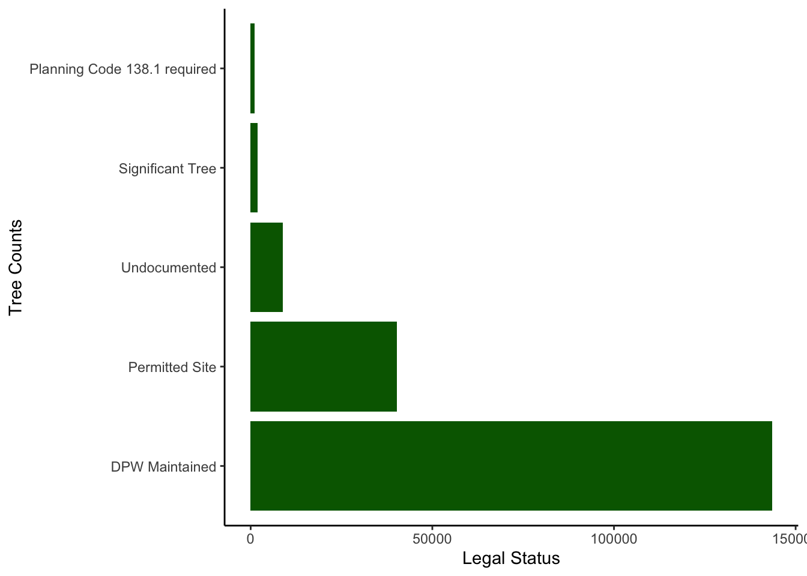
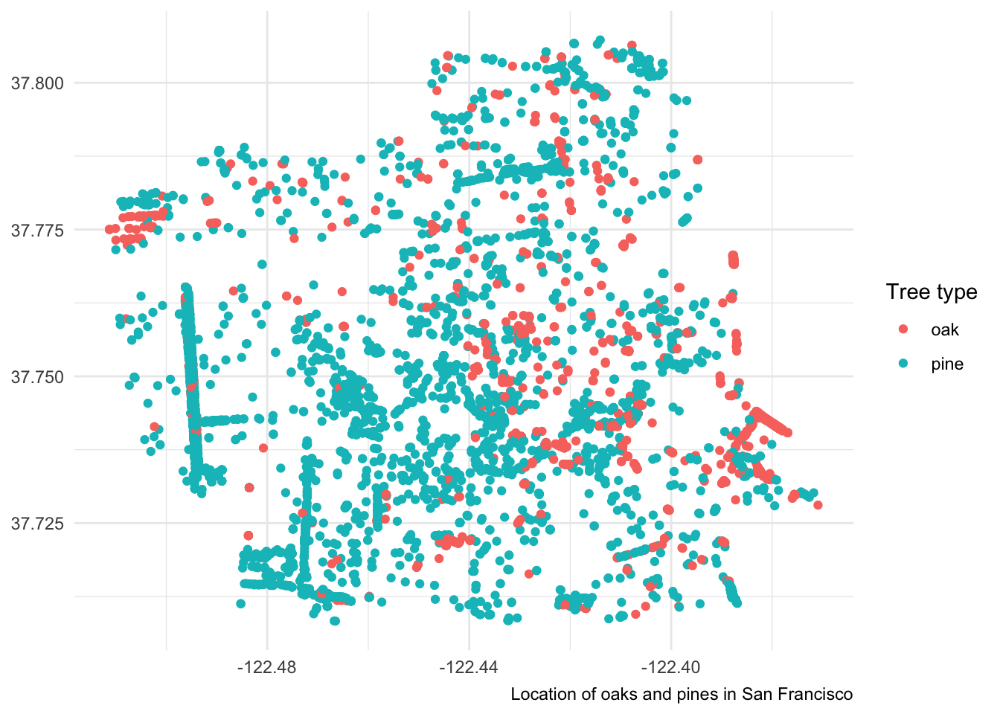

Code
library(tidyverse)
library(here)
library(sf) #simple features package for spacial data
library(tmap)
library(ggplot2)library(tidyverse)
library(here)
library(sf) #simple features package for spacial data
library(tmap)
library(ggplot2)sfo_trees_df <- read_csv(here('data', 'sfo_trees', 'sfo_trees.csv')) %>%
janitor::clean_names() #take only one function from a packageFind counts of observations by ‘legal_status’, then select the statuses with the five highest tree counts.
grouping legal status each observation into its own variable colum, so counts are separate select legal status and species pivot wider for counts summarize by tree count
sfo_trees_df %>%
group_by(legal_status) %>%
summarize(tree_count = n())# A tibble: 13 × 2
legal_status tree_count
<chr> <int>
1 DPW Maintained 143537
2 Landmark tree 243
3 Permitted Site 40201
4 Planning Code 138.1 required 1148
5 Private 336
6 Property Tree 362
7 Prune Opt Out 178
8 Section 143 131
9 Section 806 (d) 619
10 Significant Tree 1978
11 Street Tree Maintenance Opt Out 58
12 Undocumented 8770
13 <NA> 57top_5_status <- sfo_trees_df %>%
filter(!is.na(legal_status)) %>%
group_by(legal_status) %>%
summarize(tree_count = n()) %>%
ungroup() %>% #just in case you forget they are in there
slice_max(tree_count, n = 5) #pull out rows with highest value in tree_count columnMake a ggplot of the top 5 observations from above:
ggplot_trees <- ggplot(top_5_status,
aes(y = fct_reorder(legal_status, tree_count, .desc = TRUE), #reorder legal_status by tree count, making it go from highest to lowest
x = tree_count)) +
geom_col(stat = "identity", fill = 'darkgreen') + #same as bar, but you tell it which variable to make the height
labs(x = "Legal Status", y = "Tree Counts")+
theme_classic()
ggplot_trees
# swap x and y to make it horizontal or vert
# or use coord_flip()Only keep observations where legal status is “Permitted Site” and caretaker is “MTA” or “DPW”. Store as “permitted_mta_dpw”.
filter for permitted site then filter for caretaker is MTA and DPW mutate or select ?
permitted_mta_dpw <- sfo_trees_df %>%
filter(legal_status == 'Permitted Site' & caretaker %in% c('MTA', 'DPW')) #NOT GOING TO WORK if you use "==" for caretaker as well because it gave it a vector: will look directly across at each observation saying either MTA or DPW, but we want observation to have MTA and DPWOnly keep observations of oak and pine trees then only keep columns “species”, “legal_status”, “plant_date”, and “latitude” and “longitude” For each tree, note whether its an oak or a pine!
first, select columns species etc then filter for oak and pine trees, but the species are complicated! find by a search string of “oak” or “pine”? if the column contains pine or oak, and then subset select columns as needed mutate a new column for oak vs. pine
oak_pine_df <- sfo_trees_df %>%
filter(str_detect(species, "Oak") | str_detect(species, 'Pine')) %>% #or operator is |
select(species, legal_status, plant_date, latitude, longitude) %>%
mutate(type = ifelse(str_detect(species, 'Oak'), 'oak', 'pine')) #give test: if test is true, assign value A, if false, assign value Bggplot(data = oak_pine_df, aes(x = longitude, y = latitude, color = type)) +
geom_point() +
theme_minimal() +
theme(axis.title = element_blank()) +
labs(color = 'Tree type',
caption = 'Location of oaks and pines in San Francisco')
Load a list of CA native species.
ca_native_df <- read_csv(here('data/sfo_trees/ca_native_spp.csv'))How can we compare the CA native species to those in our SF trees database? Add a colun noting whether a tree is native or not. We’ll need the common and scientific names separated!
sfo_trees_native <- sfo_trees_df %>%
separate(species, into = c('spp_sci', 'spp_common'), sep = ' :: ') %>%
select(starts_with('spp'), 'plant_date', 'legal_status', 'longitude',
'latitude') %>%
mutate(ca_native = (spp_sci %in% ca_native_df$scientific_name)) #if species scientific name in sfo_trees_native matches the name in ca_native_df, it is a native plant. Will make. acolumn of true or false
sfo_native_status <- sfo_trees_native %>%
group_by(legal_status, ca_native) %>%
summarize(n_trees = n(),
n_species = n_distinct(spp_sci))